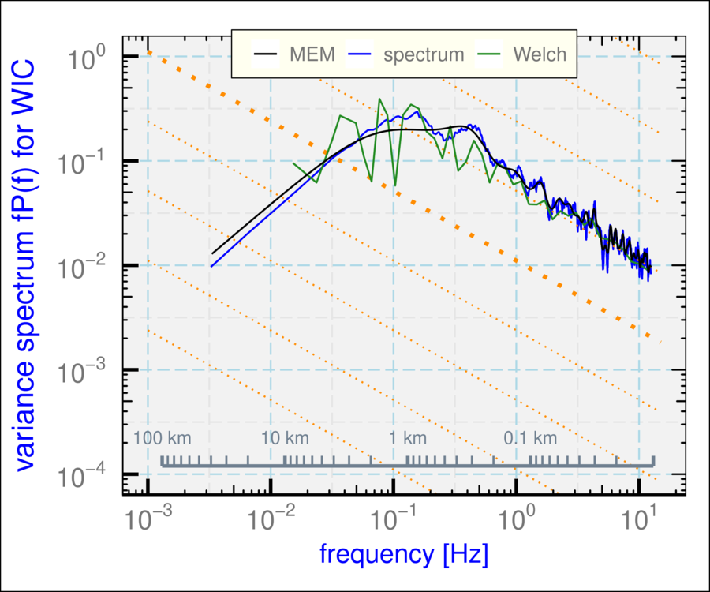
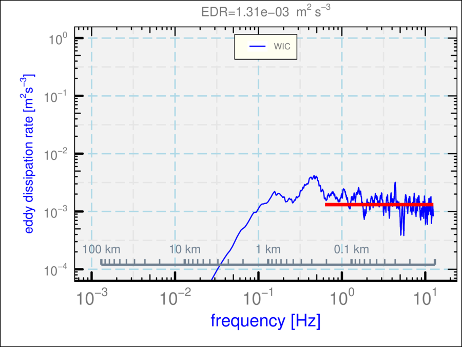

Next: Miscellaneous Up: Variance Spectra Previous: Background regarding spectral variance
See “?Ranadu::VSpec” for details regarding using this function.
The essential inputs are a data.frame that includes at least the variables
“Time”, “TASX”, and the variable for which the variance spectrum
is desired. TASX is needed to interpret the scale both in terms of
frequency and wavelength. An example is shown in Fig. ![[*]](crossref.png) ,
using the default specifications.
,
using the default specifications.
The following demonstrates how to combine plotted spectra. The three
lines on this plot were generated using the three methods of spectral
estimation available in VSpec(), all for the WIC variable:
Another option that may be of use, although the result is not a “proper”
spectrum in the sense used above, is to plot with weighting by
getNetCDF('/Data/SOCRATES/SOCRATESrf08h.nc', Start=45600, End=50100) %>%
VSpec('WIC') + theme_WAC()
 D <- getNetCDF('/Data/SOCRATES/SOCRATESrf08h.nc', Start=45600, End=50100) %>%
D <- getNetCDF('/Data/SOCRATES/SOCRATESrf08h.nc', Start=45600, End=50100) %>%
Rmutate(WIC2=WIC, WIC3=WIC) ## duplicate the variable
g <- VSpec(D, 'WIC', VLabel='spectrum')
g <- VSpec(D, 'WIC2', method='Welch', VLabel='Welch',
segLength=128, smoothBins=50, add=g)
VSpec(D, 'WIC3', method='MEM', VLabel='MEM', add=g) +
theme_WAC()

 and additional change of variables so that the resulting ordinate
matches the eddy dissipation rate in a case where the measurements
are indeed from an inertial subrange. Figure illustrates
this plot. The variable plotted is
and additional change of variables so that the resulting ordinate
matches the eddy dissipation rate in a case where the measurements
are indeed from an inertial subrange. Figure illustrates
this plot. The variable plotted is
 ,
with
,
with
 the airspeed and
the airspeed and
 for lateral spectra; this quantity
should equal the eddy dissipation rate in an inertial subrange.
VSpec(D, 'WIC', EDR=TRUE) + theme_WAC(1) ## theme_WAC(1) => smaller title
for lateral spectra; this quantity
should equal the eddy dissipation rate in an inertial subrange.
VSpec(D, 'WIC', EDR=TRUE) + theme_WAC(1) ## theme_WAC(1) => smaller title
## [1] "EDR=1.31e-03"

## to suppress the title, add "+ ggtitle(”)